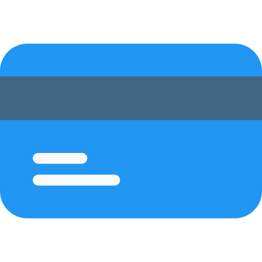
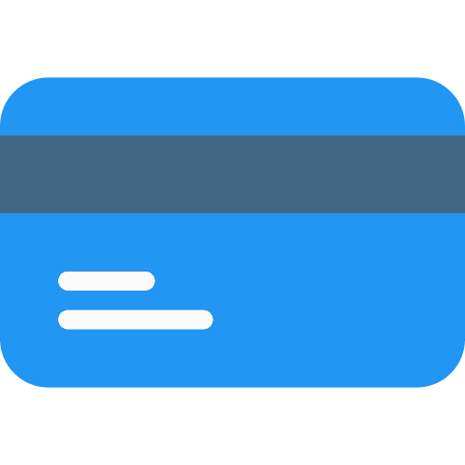

Pensando na sua saúde e da sua família, trabalhamos com serviço de higienização especializado em estofados, o que inclui:
 colchões, berços
colchões, berços
 tapetes, carpetes
tapetes, carpetes
 automotivo, náutico
automotivo, náutico
 puffs e almofadas
puffs e almofadas
Com o passar do tempo, poeira, gordura e outras sujeiras podem se acumular no tecido do seu estofado. Além disso, fungos e ácaros também podem estar presentes, podendo causar irritação e reações alérgicas.
Por isso, é muito importante fazer uma limpeza dedicada para remover impurezas e restaurar a cor do tecido, deixando-o limpo e bonito de novo.


Limpeza Com o uso de produtos profissionais que não agridem o tecido do estofado, de alta eficiencia e biodegradáveis
Qualidade Profissionais treinados, equipamentos potentes e métodos de limpeza específicos
Bem-estar Deixando seu estofado livre de poeira e impurezas, sua casa fica mais limpa e a família toda se beneficia
Realizamos o serviço em sua residência. Estamos em Santarém, Pará.
Não, porque usamos produtos líquidos e água para fazer a limpeza. No entanto, a quantidade de água usada é pouca em comparação com os métodos de lavagem tradicionais.
Quanto mais sujeira, mais água é usada no processo, por isso o tempo de secagem varia entre:
Geralmente de 3 a 6 meses é o recomendado.
O que causa alergia é deixar excessos de produto. Cuidamos para que não fique nenhum produto que possa causar irritação.
Outras formas de pagamento:
 PIX

Cartão de crédito / débito
PIX

Cartão de crédito / débito